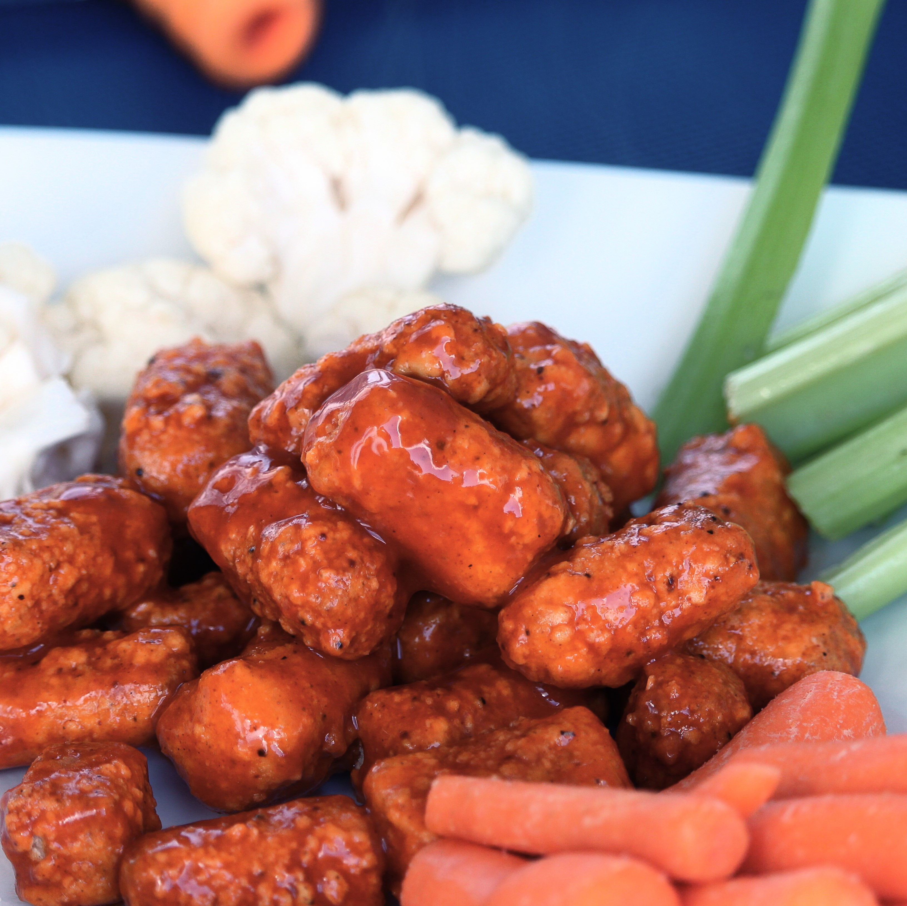

Air Fryer Vegan Buffalo Tofu Bites

Tofu is breaded and air-fried then tossed in buffalo sauce for vegan buffalo wings to cure your spicy fix without oil. Freezing the tofu gives it a chewy texture that makes this snack just that much better. Serve with fresh veggies and vegan ranch dressing.
Ingredients
- 1 (8 ounce) container extra-firm tofu
- 4 tablespoons cornstarch
- 4 tablespoons unsweetened rice milk
- ¾ cup panko bread crumbs
- ⅛ teaspoon garlic powder
- ⅛ teaspoon paprika
- ⅛ teaspoon onion powder
- ⅛ teaspoon freshly ground black pepper
- ⅔ cup vegan Buffalo wing sauce (such as Frank's®)
Steps
- Remove tofu block from the package and discard liquid. Wrap tofu in cheesecloth, place on a plate, and cover with a heavy pot until remaining liquid has been squeezed out, about 10 minutes. Remove the cheesecloth and cut tofu into 20 1-inch, bite-sized pieces. Place in a freezer-safe container and freeze, 8 hours to overnight.
- Remove tofu from freezer and thaw on paper towels or a dry cheesecloth. Pat dry.
- While tofu is thawing, put cornstarch into a resealable plastic bag. Pour rice milk into a small bowl.
- Preheat an air fryer to 375 degrees F (190 degrees C).
- Place tofu into the bag with the cornstarch, seal, and shake to coat the tofu pieces completely. Remove tofu pieces and dredge each piece in rice milk.
- Add coated tofu to the air fryer basket and cook for 10 minutes. Shake the basket to loosen the pieces. Cook for another 3 minutes or until browned.
- Place 1/3 cup buffalo sauce in a bowl, add cooked tofu bites, and toss to coat. Drizzle remaining buffalo sauce over tofu and continue tossing to coat. Serve immediately.